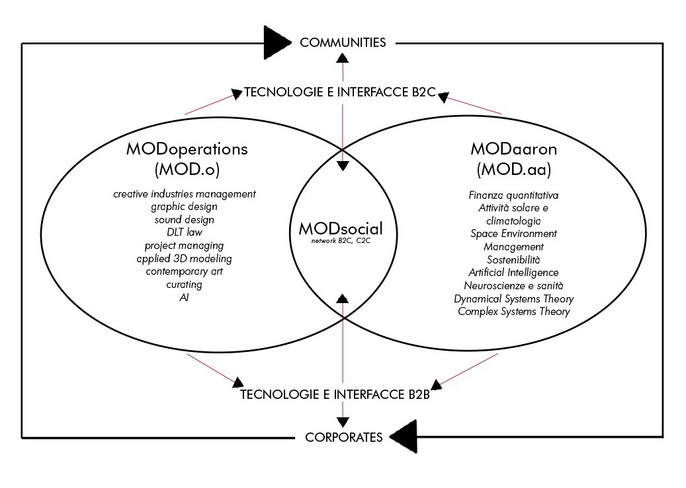

MODsocial ripensa i meccanismi di engagement digitali: andrà a disegnare le future frontiere sociali nel metaverso.
In questa piattaforma, gli utenti potranno comprare il diritto all'utilizzo digitale di spazi reali, dove costruire la loro economia, convogliare la propria community, vendere e presentare prodotti e servizi. Inoltre, gli utenti non proprietari di MODgps, non solo potranno navigare e interagire con i contenuti disponibili, ma anche creare, importare e vendere i propri asset sui marketplace sia interni che esterni. Integrando asset digitali nella mappatura dello spazio reale, MOD.s si propone di costruire layers di XR (Extended reality) e MX (Mixed reality) negli spazi pubblici e fisici della terra. Attraverso i MOD.gps gli utenti potranno geolocalizzare i loro contenuti e prodotti all'interno del proprio spazio, la community la visualizzerà attraverso due interfacce principali, MODar e gaMOD.
